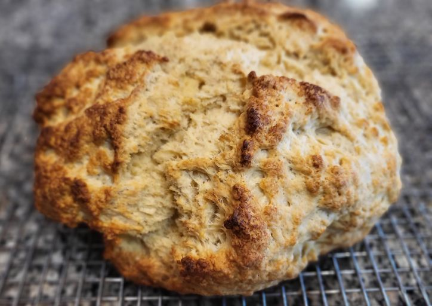

Amazingly Easy Irish Soda Bread

Descriptio:n
Irish soda bread made with buttermilk and basic pantry ingredients. The buttermilk gives this crusty loaf a good flavor. It's the best Irish soda bread around!
Ingredients:
- Flour: This classic Irish soda bread starts with all-purpose flour
- Margarine: Margarine has a higher water content than butter, so the results are often softer. If you want, you can substitute Irish butter
- Sugar: Four tablespoons of sugar add the perfect amount of sweetness
- Leaveners: Baking soda and baking powder act as leaveners, which means they help the bread rise
- Salt: A pinch of salt enhances the overall flavor of the Irish soda bread
- Buttermilk: A cup of buttermilk adds flavor and helps the loaf rise even higher
- Egg: An egg lends richness and flavor. Plus, it helps bind the dough together
- Butter: Brush the unbaked loaf with a mixture of buttermilk and butter before you bake it for extra flavor and shine
Steps
- Combine the first six ingredients in a bowl. Stir in the buttermilk and egg
- Turn the dough out and knead. Form the dough into a round loaf
- Brush with butter and buttermilk, then cut an X in the top
- Bake until a toothpick inserted into the center comes out clean